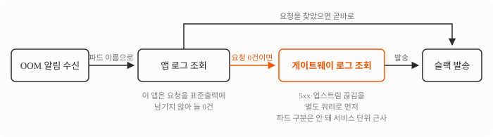

아침 8시 43분, 슬랙에 알림 세 개가 나란히 떴어요.
:skull: OOMKilled 직전 로그 — <네임스페이스>/<프론트 파드 1>
마지막 요청 (최신순, 중복제거):
• (요청 로그 없음)
파드 이름만 다르고 내용은 셋 다 같았어요. 프론트 서비스의 파드 3개가, 서로 다른 노드에서, 같은 순간에 메모리 한계로 강제 종료된 거였죠. 이 알림은 제가 몇 주 전에 만든 거예요. OOM이 났을 때 “뭔가 죽었다”에서 끝나지 않게, 죽기 직전 로그를 뒤져 마지막 요청을 같이 보내주게 만든 거고요. 그런데 정작 필요한 순간에 요청 목록이 비어서 왔어요. 어떤 요청이 파드를 죽였는지, 알림만 봐서는 알 수 없었어요.
알림은 앱이 표준출력에 남긴 요청 로그를 정규식으로 찾는데, 이 프론트 앱은 요청을 거기에 남기지 않아요. 같은 요청이 API 게이트웨이 쪽에는 그대로 남아 있어서 앱 로그가 비었을 때만 게이트웨이 로그로 넘어가도록 고쳤죠. 그렇게 되살린 목록에서 원인 요청이 나왔는데, 이미지 최적화 요청 한 건이 메모리 한계를 혼자 넘기고 있었어요.
그날 아침엔 이런 일이 있었어요
| 시각 | 사건 |
|---|---|
| 08:42:25 | 이미지 요청이 502로 응답 |
| 08:42:28 | 로그아웃 요청도 503으로 응답 |
| 08:43 | 파드 3개 OOMKilled 알림 — 셋 다 “(요청 로그 없음)“ |
메모리 그래프를 믿은 게 첫 실수였어요
가장 먼저 본 건 메모리였어요. 그런데 여기서 한 번 헛다리를 짚었죠.
- 메모리가 서서히 차오른 걸까? 아니었어요. 컨테이너 한계는 1,480MiB인데, 수집된 최대 사용량은 죽기 직전까지도 600MiB를 넘지 않았어요. 노드 여유 메모리도 5.6~7.4GiB로 넉넉했고요. 숫자만 보면 죽을 이유가 없는 파드였어요.
- 그럼 메트릭이 맞을까? 여기서 잘못 봤어요. 사용량은 수십 초 간격으로 수집되는데, 급증이 그 사이에 시작해서 끝나면 그래프에는 아무것도 안 남아요. OOM 여부는 그래프가 아니라 컨테이너의 종료 사유로 판단해야 했어요.
- 로그 조회 자체가 잘못된 걸까? 아니었어요. 같은 조건으로 다른 파드를 조회하면 로그가 잘 나왔고, 제가 확인용으로 짠 스크립트 버그를 저장소 탓으로 오해한 거였어요.
조회가 정상이라면 로그 자체를 세어봐야죠.
앱이 요청을 안 찍고 있었어요
같은 시간대의 파드 로그를 꺼내 알림이 쓰는 정규식 두 개로 세어봤어요.
| 파드 | 로그 줄 수 | 요청으로 인식된 줄 |
|---|---|---|
| 문제의 프론트 | 24줄 | 0줄 |
| 비교용 백엔드 | 200줄 | 67줄 |
원인은 여기 있었어요. 백엔드 프레임워크는 요청마다 한 줄씩 남기지만 이 프론트 앱은 그러지 않거든요. 찾을 게 애초에 없으니 “(요청 로그 없음)“이 정직한 결과였던 거예요.
그런데 그 요청들이 아무 데도 안 남는 건 아니에요. 모든 요청은 API 게이트웨이를 거쳐 들어오고 게이트웨이는 자기 액세스 로그에 그걸 다 적어두거든요. 게이트웨이는 받은 요청을 뒤쪽 앱으로 넘기는데, 그 뒤쪽을 업스트림이라고 불러요. 앱이 응답을 다 주기 전에 끊기면 그 사실도 게이트웨이 로그에 남고요.
앱 로그가 비었을 때만 게이트웨이로 넘어가게 했어요
고친 건 알림 스크립트 한 곳이에요. 앱 로그에서 요청을 찾았으면 그대로 쓰고 못 찾았을 때만 게이트웨이 로그를 뒤지게 했어요.
kong = []
if not reqs:
try:
kong = kong_fallback(pod)
except Exception as e:
kong = ["(Kong 로그 조회 실패: %s)" % e]게이트웨이 로그를 뒤질 때 한 가지를 더 나눴어요. 5xx 응답과 “업스트림이 처리 도중 끊겼다”는 에러 로그는 별도 쿼리로 먼저 뽑아요. 이 둘이 죽는 파드로 들어간 요청이라 원인 요청일 가능성이 가장 높거든요. 일반 요청과 한 쿼리로 묶으면 조회 개수 제한 안에서 정상 응답들에 밀려나요.
고친 뒤 조회 경로는 이렇게 돼요.

한계도 있어요. 게이트웨이 로그에는 요청이 어느 파드로 갔는지가 안 남아서 같은 서비스의 다른 파드로 간 요청이 섞일 수 있어요. 서비스 단위 근사라는 한계는 주석으로 적어뒀고요.
사고 시각을 그대로 재생해봤어요
고쳤다고 말하려면 그날 그 시각에 실제로 범인이 나와야죠. 조회 시각을 사고 당시로 고정해놓고 돌려봤어요.
== 기존 ==
(요청 로그 없음)
== 패치 후 ==
• 08:42:28 GET /oauth/logout -> 503 ← 파드 사망 후/중
• 08:42:28 GET /_next/image?... -> 업스트림 끊김(처리 중 사망) ← 파드 사망 후/중
• 08:42:25 GET /_next/image?... -> 502 ← 파드 사망 후/중
두 번째 줄이 원인 요청이었어요. 이미지 최적화 요청은 서버가 원본을 받아 픽셀로 펼친 뒤 크기를 줄여 돌려주는 일인데, 이 원본이 6.6MB짜리 JPEG이에요. 펼치면 그보다 훨씬 커지고요.
이 요청 하나를 개발 환경 파드에서 그대로 재현해봤어요.
| 측정 지점 | 메모리 |
|---|---|
| 요청 전 | 454MB |
| 요청 처리 중 최고 | 1,784MB |
| 이 한 건이 늘린 양 | 1.33GB |
| 운영 컨테이너 한계 | 1,480MiB(약 1,552MB) |
요청 하나로 한계를 넘겨버려요. 사고 당시엔 이런 요청이 20건 넘게 몰렸고요.
이렇게까지 쓴 건 이미지 처리 네이티브 모듈이 컨테이너 안에서 로드에 실패했기 때문이에요. 앱이 실행되는 컨테이너의 표준 C 라이브러리 버전이 그 모듈이 요구하는 것보다 낮았거든요. 그래서 프레임워크가 네이티브 모듈 없이 도는 폴백으로 이미지를 처리했고, 그 폴백이 메모리를 훨씬 많이 써요. 이건 프론트 저장소 몫이라 재현 수치와 함께 이슈로 넘겼어요.
알림은 워크로드 두 종류에서 확인해야 했어요
이 알림은 요청 로그를 남기는 워크로드에서는 잘 돌았어요. 로그 형식이 다른 워크로드에서 아무것도 못 짚는다는 건 사고가 나서야 드러났고요.
그래서 알림의 완성 판정을 바꿨어요. 성격이 다른 워크로드 두 종류에서 실제 출력을 받아본 뒤에만 끝난 것으로 쳐요. 그리고 관측 도구에서 아무것도 안 나오는 상황은 “아무 일 없음”과 “도구가 못 봄” 두 가지라는 것, 이번엔 후자였다는 게 이 글의 결론이에요.